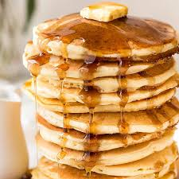

Fuluffy Pancakes

Need a fluffy pancake recipe? This one is just right, especially when there's plenty of butter and syrup. Make it extra special with berries and cream!
ingredients
- 3/4 cup milk
- 2 tablespoons white vinegar
- 1 cup all-purpose flour
- 2 tablespoons white sugar
- 1 teaspoon baking powder
- 1/2 teaspoon baking soda
- 1/2 teaspoon salt
- 1 egg
- 2 tablespoons butter, melted
- cooking spray
Directions
- Step
Gather all ingredients.
- Step
Combine milk and vinegar in a medium bowl and set aside for 5 minutes to make sour milk.
- Step
Combine flour, sugar, baking powder, baking soda, and salt in a large mixing bowl.
- Step
Whisk egg and butter into soured milk.
- Step
Pour flour mixture into milk mixture and whisk until lumps are gone.
- Step
Heat a large skillet over medium heat, and coat it with cooking spray. Pour 1/4 cupfuls of batter onto the skillet, and cook until bubbles form and the edges are dry, about 2 to 3 minutes.
- Step
Flip with a spatula, and cook until browned on the other side. Repeat with remaining batter.